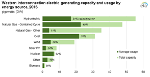

Electricity Monthly Update
With Data for August 2016 | Release Date: Oct. 25, 2016 | Next Release Date: Nov. 23, 2016
Previous Issues
Highlights: August 2016
- Texas (ERCOT) set new daily peak electricity demand records on August 8, 10, and 11.
- Wholesale electricity prices were at or near the high end of the 12-month range at many hubs due to very high electricity demand and rising natural gas price.
- Net generation in the United States increased 4.4% from the previous August, as many states in the eastern half of the country experienced significantly higher temperatures compared to August 2015.
Key Indicators
| August 2016 | % Change from August 2015 | |
|---|---|---|
| Total Net Generation (Thousand MWh) |
410,885 | 4.4% |
| Residential Retail Price (cents/kWh) |
12.90 | -0.2% |
| Retail Sales (Thousand MWh) |
375,848 | 4.7% |
| Cooling Degree-Days | 374 | 19.9% |
| Natural Gas Price, Henry Hub ($/MMBtu) |
2.88 | 1.1% |
| Natural Gas Consumption (Mcf) |
1,197,948 | 12.0% |
| Coal Consumption (Thousand Tons) |
73,951 | -0.2% |
| Coal Stocks (Thousand Tons) |
162,563 | 3.8% |
| Nuclear Generation (Thousand MWh) |
71,526 | -1.2% |
Energy source mix varies among the three U.S. electricity grids
 Source: U.S. Energy Information Administration, Annual Electric Generator Report (Form EIA-860) and the Power Plant Operations Report (Form EIA-923), North American Electric Reliability Corporation
Source: U.S. Energy Information Administration, Annual Electric Generator Report (Form EIA-860) and the Power Plant Operations Report (Form EIA-923), North American Electric Reliability CorporationThe bulk electric system of the Lower 48 states consists of three independently synchronized electric interconnections: Eastern, Western, and the ERCOT part of Texas. Because of minimal transfers of electricity between the Interconnections, each interconnection essentially meets its demand with its own generating resources along with modest contributions from international imports.
The three U.S. electric Interconnections differ widely in their amount of generating capacity, energy source mix, and type of capacity actually used to produce electricity. The Eastern Interconnection had 748 gigawatts (GW) of total generating capacity in 2015. This is significantly more than the Western Interconnection at 212 GW and the ERCOT part of Texas at 98 GW.
The charts below present generation capacity in each Interconnection by energy source. The total bar indicates total capacity by energy source. The shorter darker bar represents how much of the total capacity was used during the year on average. The ratio of average use to total capacity is called the capacity factor (CF). These dark bars represent the relative output of capacity by fuel source.
The amount that each energy source contributes to meeting the demand depends on how much of each type of capacity is used. Certain plants operate closer to their full capacity more of the time than others, depending on economic factors such as fuel cost and resource factors such as the availability of wind, sun, or water. In general, nuclear plants, coal plants, and natural gas combined-cycle plants operate closer to their full capacity more of the time than other generating technologies.
Source: U.S. Energy Information Administration, Annual Electric Generator Report (Form EIA-860) and the Power Plant Operations Report (Form EIA-923)In the east, coal represents the largest capacity resource. Although the total capacity of all natural gas technologies exceeds coal, due to distinct performance and operating attributes, combined-cycle natural gas-fired applications are considered separately from simple-cycle natural gas-fired applications. However, based on output, coal exceeds all natural gas technologies, either together or separately. Renewable capacity and generation are significantly smaller than the other energy sources.
 Source: U.S. Energy Information Administration, Annual Electric Generator Report (Form EIA-860) and the Power Plant Operations Report (Form EIA-923)In the west, hydroelectric capacity largely on the Columbia, Snake, and Colorado rivers surpasses the capacities of all other energy sources. Natural gas combined-cycle had the highest output in 2015, slightly higher than coal. The individual capacities of wind and solar PV are greater than nuclear capacity. But nuclear's higher capacity factor means its output is higher than either of those renewable sources.
Source: U.S. Energy Information Administration, Annual Electric Generator Report (Form EIA-860) and the Power Plant Operations Report (Form EIA-923)In Texas, natural gas combined-cycle generators are the largest in both capacity and output. Wind capacity rivals that of fossil fuel generators and, even with its relatively low 20% capacity factor, wind equals the output of nuclear units.
An interesting feature of the Western Interconnection is that coal accounts for a comparatively large share of generation (26%) relative to its capacity (15%). This relationship is explained by the fact that coal plants in the Western Interconnection operate on average near a 70% capacity factor, which is significantly higher than the 53% capacity factor in the Eastern Interconnection (36% generation, 31% capacity) and the 57% capacity factor in Texas (25% generation, 19% capacity).
One aspect of consistency across the interconnections is the relatively high capacity factor of nuclear plants, which averages between 91% and 92%. This high capacity factor is attributable to the facts that nuclear plants perform better when operating under relatively steady conditions and tend to have comparatively low variable costs.
The overall capacity factor in the west (39%) is significantly lower than in the east (45%) or in Texas (43%). These differences are consistent with their capacity mixes. The lower overall capacity factor of the Western Interconnection reflects a lower number of nuclear and coal plants, both of which tend to operate at high capacity factors. In contrast, the Eastern Interconnection, with relatively large amounts of nuclear and coal capacity, has the highest overall capacity factor.
Principal Contributor:
Glenn McGrath
(Glenn.McGrath@eia.gov)
End Use: August 2016
Retail rates/prices and consumption
In this section, we look at what electricity costs and how much is purchased. Charges for retail electric service are based primarily on rates approved by state regulators. However, a number of states have allowed retail marketers to compete to serve customers and these competitive retail suppliers offer electricity at a market-based price.
EIA does not directly collect retail electricity rates or prices. However, using data collected on retail sales revenues and volumes, we calculate average retail revenues per kWh as a proxy for retail rates and prices. Retail sales volumes are presented as a proxy for end-use electricity consumption.
Average revenue per kWh by state


Average revenue per kilowatthour figures decreased in 23 states and the District of Columbia in August compared to last year. The largest declines were found in Nevada (down 9.9%), Hawaii (down 9.4%), and Mississippi (down 8.4%). 27 states increased compared to last year, led by Iowa (up 8.1%), West Virginia (up 7.5%), and Indiana (up 5.8%).
Total average revenues per kilowatthour were down 0.3% to 10.83 cents in August compared to last year. All sectors were down on the month, from a 2.4% drop in the Transportation sector to a 0.2% drop in the Residential sector. Retail sales were up 4.7% overall to 375,848 gigawatthours (GWh). The Residential, Commercial, and Transportation sectors showed gains of 8.2%, 4.6%, and 0.9%, respectively, while the Industrial sector showed a decline of 0.9%.
Retail sales


State retail sales volumes were down in 8 states in August compared to last year. Arizona recorded the largest year-over-year decline, down 6.7%, Louisiana and Arkansas had the next largest declines, down 4.6 and 2.7%, respectively. 42 states and the District of Columbia had retail sales volume increases in August, led by Michigan (up 12.1%), Ohio (up 11.9%), and Maryland (up 11.1%).


Scientists at NASA's Goddard Institute for Space Studies reported that August 2016 was the warmest August recorded in their 136 years of record-keeping. Accordingly, Cooling Degree Days (CDD) were higher across most of the country, up in 38 states and the District of Columbia compared to last August. 11 states had an over 50% increase in CDDs. The largest year-over-year increase was found in Ohio, followed by Michigan, Indiana, and Pennsylvania, all of which had an over 70% increase in CDDs from August 2015 to August 2016. 12 states had fewer CDDs than last August, with these states mostly found in the Mountain West region. Alaska had the largest CDD decrease of any state, followed by Colorado, Montana, New Mexico, and Wyoming.
Resource Use: August 2016
Supply and fuel consumption
In this section, we look at the resources used to produce electricity. Generating units are chosen to run primarily on their operating costs, of which fuel costs account for the lion's share. Therefore, we present below, electricity generation output by fuel type and generator type. Since the generator/fuel mix of utilities varies significantly by region, we also present generation output by region.
Generation output by region

{kind=link}
{kind=link}
{kind=link}
{kind=link}
{kind=link}
{kind=link}
{kind=link}
Net generation in the United States increased 4.4% from the previous August. This occurred because the country, as a whole, experienced above average temperatures in August 2016 that were higher than the above average temperatures experienced in August 2015. This led to an increased need for residential cooling this year and thus, an increase in electricity generation. At the regional-level, only Texas and the Western region saw decreases in year-over-year electricity generation, as these areas experienced temperatures that were cooler than the previous August.
The change in electricity generation from coal compared to the previous August was mixed throughout the country. The Northeast, Mid-Atlantic, Southeast, Florida, and Texas saw increases in coal generation from the previous year, while the Central and Western regions saw a decrease in coal generation. Natural gas generation increased from the previous year in all parts of the country except for in Texas and the West. This decrease in both coal and natural gas generation in the West occurred because the region, and more specifically the Northwest part of the country, saw a large increase in hydroelectric generation in August 2016. As a whole, nuclear generation was down 1.2% compared to the previous August, with Florida experiencing the largest percent decrease (-24.6%) due to the forced outage of generator one at the Saint Lucie nuclear plant.
Fossil fuel consumption by region
The chart above compares coal consumption in August 2015 and August 2016 by region and shows that the change in coal consumption mostly mirrored the change in electricity generation from coal. The largest percentage increase in coal consumption occurred in the Northeast (102.9%), where the consumption of coal for electricity generation is almost negligible. The two plants driving the increase in coal consumption in the Northeast were the Brayton Point and Somerset Operating Co LLC power plants. The largest decrease in coal consumption compared to the previous July occurred in the Western region (-4.1%).
The second tab compares natural gas consumption by region and shows that changes in natural gas consumption increased from the previous August in all parts of the country except for in Texas and the West. The largest percentage increase in natural gas consumption occurred in the Central (42.3%) and the Mid-Atlantic (35.4%) regions.
The third tab presents the change in the relative share of fossil fuel consumption by fuel type on a percentage basis, calculated using equivalent energy content (Btu). This highlights changes in the relative market shares of coal, natural gas, and petroleum. In August 2016, the Central and Mid-Atlantic regions experienced the largest increases in the share of natural gas consumption at the expense of coal consumption. Only the Northeast and Texas saw coal consumption increase at the expense of natural gas compared to the previous year.
The fourth tab presents the change in coal and natural gas consumption on an energy content basis by region. The changes in total coal and natural gas consumption were similar to the changes seen in total coal and natural gas net generation in each region.
Fossil fuel prices
To gain some insight into the changing pattern of consumption of fossil fuels over the past year, we look at relative monthly average fuel prices. A common way to compare fuel prices is on an equivalent $/MMBtu basis as shown in the chart above. The average price of natural gas at Henry Hub remained relatively unchanged from the previous month, only decreasing by $0.01/MMBtu from $2.89/MMBtu in July 2016 to $2.88/MMBtu in August 2016. The natural gas price for New York City (Transco Zone 6 NY) decreased, going from $2.23/MMBtu in July 2016 to $2.06/MMBtu in August 2016.
The New York Harbor residual oil price increased from the previous month, going from $7.59/MMBtu in July 2016 to $7.67/MMBtu in August 2016. Regardless, oil used as a fuel for electricity generation is almost always priced out of the market.
A fuel price comparison based on equivalent energy content ($/MMBtu) does not reflect differences in energy conversion efficiency (heat rate) among different types of generators. Gas-fired combined-cycle units tend to be more efficient than coal-fired steam units. The second tab shows coal and natural gas prices on an equivalent energy content and efficiency basis. For the third consecutive month, the price of natural gas at Henry Hub was above the price of Central Appalachian coal on a $/MWh basis. This was mainly due to the increase in the price of natural gas at Henry Hub in previous months. The price of natural gas at New York City on a $/MWh basis was still below the price of Central Appalachian coal for a sixth consecutive month, with the spread between the two prices increasing due to the decrease in the price of natural gas at New York City.
The conversion shown in this chart is done for illustrative purposes only. The competition between coal and natural gas to produce electricity is more complex. It involves delivered prices and emission costs, the terms of fuel supply contracts, and the workings of fuel markets.
Regional Wholesale Markets: August 2016
The United States has many regional wholesale electricity markets. Below we look at monthly and annual ranges of on-peak, daily wholesale prices at selected pricing locations and daily peak demand for selected electricity systems in the Nation. The range of daily prices and demand data is shown for the report month and for the year ending with the report month.
Prices and demand are shown for six Regional Transmission Operator (RTO) markets: ISO New England (ISO-NE), New York ISO (NYISO), PJM Interconnection (PJM), Midwest ISO (MISO), Electric Reliability Council of Texas (ERCOT), and two locations in the California ISO (CAISO). Also shown are wholesale prices at trading hubs in Louisiana (into Entergy), Southwest (Palo Verde) and Northwest (Mid-Columbia). In addition to the RTO systems, peak demand is also shown for the Southern Company, Progress Florida, Tucson Electric, and the Bonneville Power Authority (BPA). Refer to the map tabs for the locations of the electricity and natural gas pricing hubs and the electric systems for which peak demand ranges are shown.
In the second tab immediately below, we show monthly and annual ranges of on-peak, daily wholesale natural gas prices at selected pricing locations in the United States. The range of daily natural gas prices is shown for the same month and year as the electricity price range chart. Wholesale electricity prices are closely tied to wholesale natural gas prices in all but the center of the country. Therefore, one can often explain current wholesale electricity prices by looking at what is happening with natural gas prices.